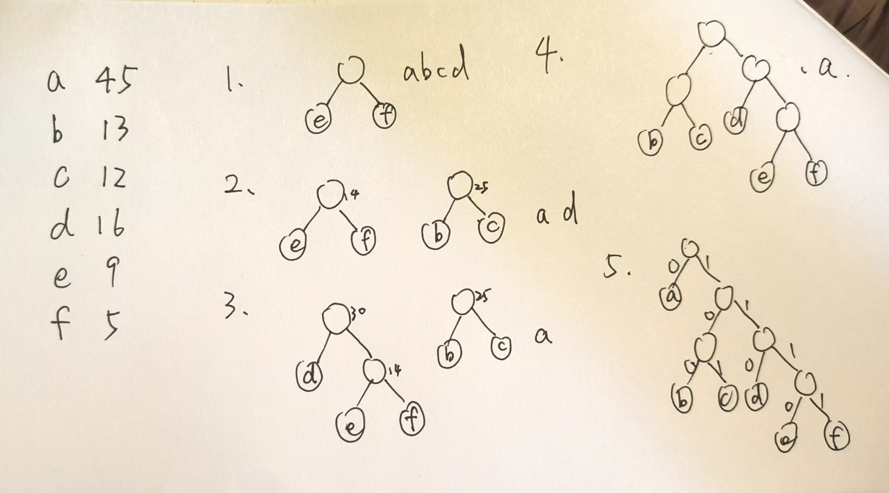

# Ch5
# 树
树的性质：
- 个节点的树有 条边
- 结点数 等于所以结点的度数和 + 1
- 度为 的树中第 层上之多有 个结点
- 高度为 的 叉树中至多有 个结点
- 度为，具有 个结点的树的最小高度
- 度为，具有 个结点的树的最大高度 h 为
- 高度为，度为 的树至少有 个结点
# 二叉树
二叉树：每个结点最多有两个子树，称为左子树和右子树
二叉树和度为 2 的有序树的区别：
- 度为 2 的有序树至少有 3 个结点，二叉树可以为空
- 二叉树不管有没有兄弟结点都需要区分是左子树还是右子树
- 满二叉树：每层都满
- 完全二叉树：除了最后一层外，其他层都是满二叉树，最后一层左边要是满的
- 二叉排序树：每个结点都满足左子树小于该结点，右子树大于该结点
- 平衡二叉树：任意结点的左右子树的高度差不超过 1
- 正则二叉树：树中每个分支结点都有两个子结点，树中只有度为 0 或 2 的结点
性质：
- 非空二叉树上的叶结点数等于度为 2 的结点数加 1，
- 非空二叉树第 k 层最多有 个结点
- 高度为 h 的二叉树最多有 个结点
- 对完全二叉树按从上到下、从左到右的顺序依次编号，则
最后一个分支节点的编号为，如果 小于等于这个数就是分支节点，否则就是叶子结点
如果 为奇数，则每个分支节点都有左右孩子，如果是偶数就编号最大的分支只有左孩子
结点 的左孩子编号为，右孩子编号
结点 i 所在的 depth 为 - 具有 n 个结点的完全二叉树的高度为 或者
# 二叉树的存储结构
- 完全二叉树可以存储在数组里，数组中第 i 个结点对应数组中的第 i 个元素，0 为空，就可以利用下标找到 parent/left child/right child
- 普通的二叉树采用链式存储结构
1 | typedef struct BiTNode{ |
# 二叉树的遍历和线索二叉树
- PreOrder 先（前）序遍历：根左右
1 | void PreOrder(BiTree T){ |
- InOrder 中序遍历：左根右
1 | void InOrder(BiTree T){ |
- PostOrder 后序遍历：左右根
1 | void PostOrder(BiTree T){ |
以上三种遍历方式都是递归方式，栈的深度就是树的高度，时间复杂度都是
最坏的情况下，二叉树是有 n 个结点且深度为 n 的单支树，此时空间复杂度为
- LevelOrder 层序遍历：从上到下从左到右
需要借助一个队列，其实就是 bfs
1 | void LevelOrder(BiTree T){ |
- 由遍历序列构造二叉树
若已知 InOrder，再给出 PreOrder/PostOrder/LevelOrder 都可以唯一的确定一棵二叉树
- 前序 + 中序
用先序遍历得到根节点，在中序遍历中找，根节点把中序遍历分为左右两段分别是左子树和右子树，递归构造左右子树 - 后序 + 中序
和前序同理 - 层序 + 中序
层序的第一个是根节点，然后在层序找到左右子树的根节点（如果有左子树，根后面第一个就是左子树的根节点，如果有右子树，下一个就是右子树的根节点）
例
# 线索二叉树
利用叶子结点和不满的结点的空指针存放指向其前驱或者后继的指针，若没有左子树，则 lchild 指向前驱结点，若没有右子树，则 rchild 指向后继结点。新增 ltag 和 rtag，如果为 0 表示指向左 / 右孩子，为 1 表示为线索指向前驱 / 后继结点
1 | typedef struct ThreadNode{ |
方法就是找出遍历的序列，然后对每个不满的节点建立线索
# 中序线索二叉树：
1 | void InThread(ThreadTree &p, ThreadTree &pre){ |
为了方便会增加一个 head 结点的 lchild 指向根节点，rchild 指向中序遍历的最后一个结点，令中序遍历第一个节点的 lchild 和最后一个节点的 rchild 指向 head
1 | ThreadNode *Firstnode(ThreadNode *p){ |
1 | ThreadNode *Nextnode(ThreadNode *p){ |
1 | ThreadNode *Lastnode(ThreadNode *p){ |
1 | ThreadNode *Prevnode(ThreadNode *p){ |
1 | void InOrder(ThreadNode *T){ |
# 先序线索二叉树
# 后序线索二叉树
# 树，森林
# 树的存储结构
- 双亲表示法
用一个结构体数组来存，一个 node 包括数据域和 parent 域，parent 域的值是父节点的数组下标。根节点的 parent 域为 - 1
1 |
|
优点：可以很快找到 parent，但求孩子需要遍历整个树
2. 孩子表示法
将每个结点的孩子视为一个线性表，以单链表作为存储结构
3. 孩子兄弟表示法
二叉树表示法，每个结点包括数据域，左孩子指针，右兄弟指针
1 | typedef struct CSNode{ |
图示
# 树、森林和二叉树的转换
- 树转二叉树
用孩子兄弟表示法（左孩子右兄弟） - 森林转二叉树
先讲森林中的每棵树转为二叉树，每棵树视为兄弟，将第二棵树对应的二叉树作为第一颗二叉树根的右子树……
例
- 二叉树转森林
把右子树分开，知道最后只剩一棵没有右子树的二叉树为止。和森林转二叉树相反
# 树和森林的遍历
- 树的遍历
- 先根后子树，遍历序列和这棵树对应的二叉树的先序序列相同
- 先子树后根，遍历序列和这棵树对应的二叉树的中序序列相同
- 森林的遍历
- 先序遍历：从第一棵树开始，先根，再子树
- 中序遍历：从第一棵树开始，先子树，再根
# 树与二叉树的应用
# 哈夫曼树
# 定义
带权路径长度：根结点到该结点的路径长度 * 该结点的权值
树的带权路径长度
WPL 最小的二叉树称为哈夫曼树，也称最优二叉树
# 构造
- 构造方法：不断合并两个权值加起来最小的结点
# 哈夫曼编码
可变长度编码，让频率高的字符编码长度短，频率低的字符编码长度长
用哈夫曼树构建哈夫曼编码，是前缀编码，因此每个编码都可以唯一区分一个字符（没有字符的编码是其他编码的前缀）
构造的方法是权值为频率，左分支为 0，右分支为 1（左边 1 右边 0 也可以，主要是看长度）

编码方式不唯一，因为长度相同的字符编码方式是可以互换的
# 并查集 Disjoint Set
主要用来求等价关系
基本操作：
- 初始化：所有元素都是单元素集合
- Union (S, Root1, Root2): 合并两个集合，把 Root2 的根节点连到 Root1 的根节点上
- Find (S, x): 查找 x 的根节点
基本实现：
1 |
|
# 并查集的优化
- 按高度求并 Union-by-Height
- 用根节点的绝对值表示树的结点总数（根节点的值是负数）
- 把小树合并到大树，能够保证所有树的深度最多是
1 | void Union(int S[], int Root1, int Root2){ |
- 路径压缩
为了减少深度，在 Find 操作时将从根到元素 x 路径上的所有元素都变成根的孩子
1 | int Find(int S[], int x){ //先搜一次找到根，再搜一次把路径上所有节点的父节点都改成根 |